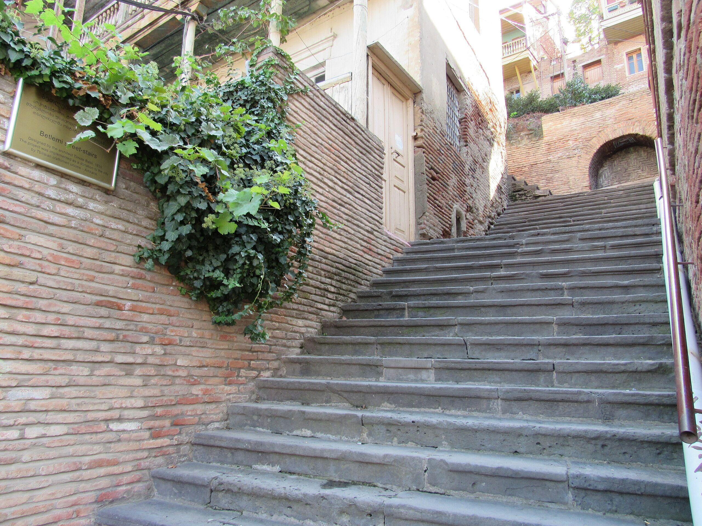
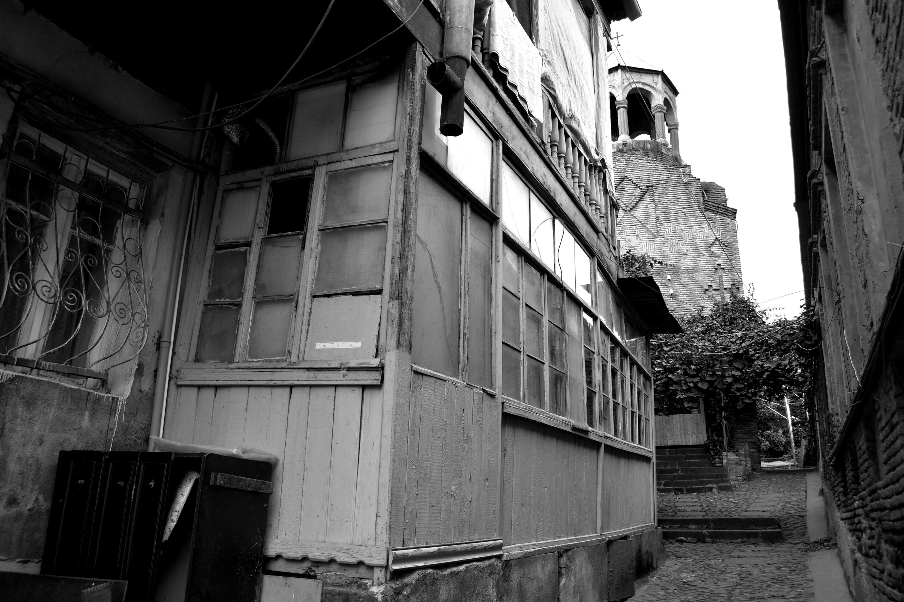
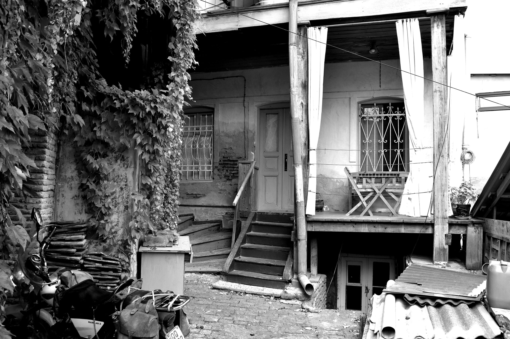
თონე ბეთლემის კიბის ძირში, ძველი თბილისი.
ცხელი შოთი თონის კედლიდან ყოველ 8 წუთში, 8:00–20:00.
ბეთლემი
სახელი ქუჩამ დაგვარქვა
ბეთლემი ებრაულად „პურის სახლს“ ნიშნავს. ქუჩამ ეს სახელი ჩვენამდე დიდი ხნით ადრე მიიღო, ჩვენი თონე კი ამ სახლის პირველ საფეხურთან დგას.
-
120 საფეხური
ჩვენს კარს ზემოთ, ზემო ბეთლემის ბაღამდე
-
8 წუთი
ამდენ ხანს რჩება შოთი თონის კედელზე
-
1,50 ₾
შოთი, ცხელი, ქაღალდის ზოლში
-
8:00–20:00
ყოველდღე, თონეს 6:30-ზე ვანთებთ
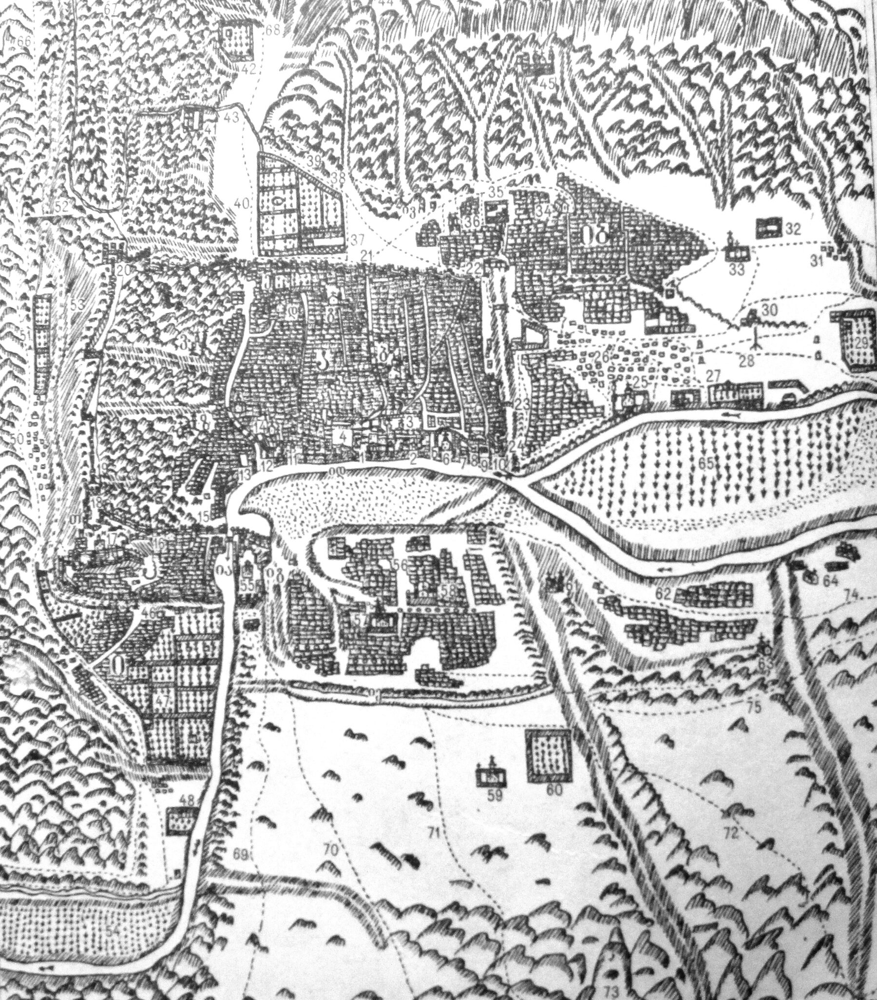
ჩვენი თონე იატაკშია
ეს ძველებური თონეა: იატაკში ჩაშენებული მრგვალი ორმო, აგურითა და თიხით ამოგებული. მას პირველ პურამდე საათნახევრით ადრე ვანთებთ. ყველაფერი, რასაც ვყიდით, მის კედელზეა გამომცხვარი.
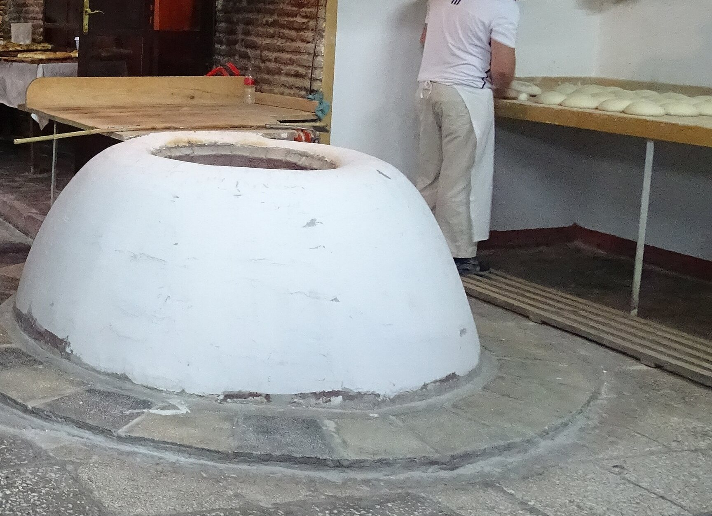
ვზელთ
ფქვილი, თბილი წყალი, მარილი და საფუარი. საათნახევრის განმავლობაში ცომი სელის ტილოს ქვეშ ამოდის და ორნახევარჯერ იზრდება.
ცომი თბილისური საცხობის მაგიდაზე, 2018.
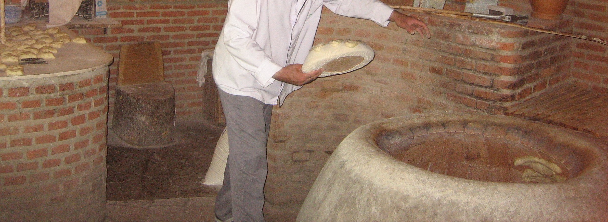
ვწელავთ
600-გრამიან გუნდას სელის ბალიშზე ვდებთ, რომელსაც ხის ძირი აქვს. მეპურე მას ბოლოებით წელავს და ცომი შოთის ნავად იქცევა.
მეპურე შოთის ცომით თონესთან, თბილისი, 2011.
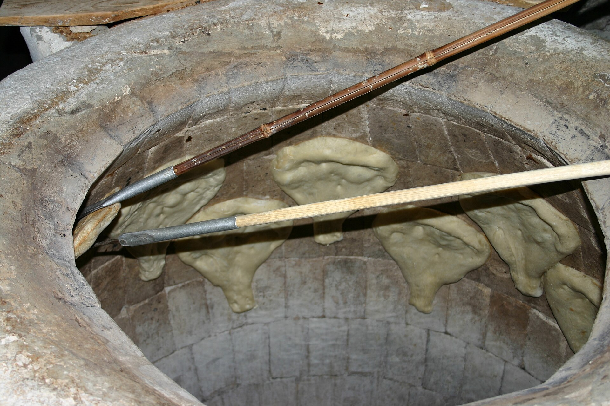
ვაკრავთ
მეპურე თონეში თავით იხრება და ცომს ცხელ კედელს აკრავს. ქვედა ნახევარი მეტრი ცარიელია: იქ პური დაიწვება.
ცომი თონის კედელზე, საქართველო, 2005.

ვუცდით
რვა წუთი და შოთი ოქროსფერია. კავით ვიჭერთ, საფხეკით კედელს ვაძრობთ და ცხელს, ქაღალდის ზოლში გაძლევთ.
პური თონის კედელზე, 2014.
120
საფეხური
აიღეთ შოთი და ადით. აი, რა გელით ჩვენს კარს ზემოთ.
-
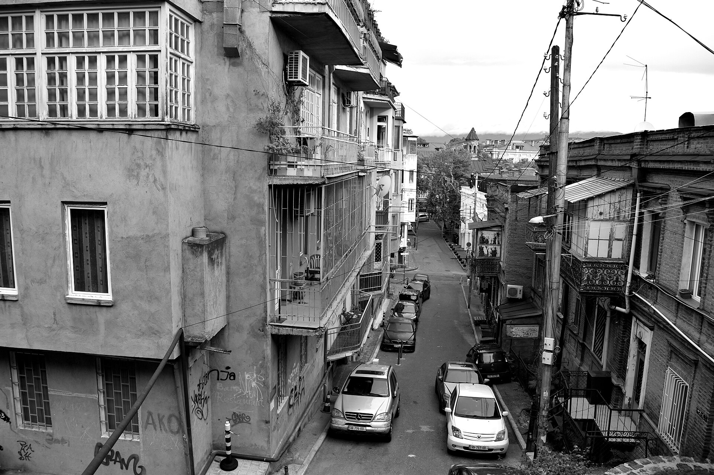
ლადო ასათიანის ქუჩა
ქვემოთ, ჩვენს კართან
აქედან აღმართი კლდეს მიუყვება ზემოთ. შოთი ჯერ კიდევ თითებს გწვავთ, ამიტომ წვერი მაშინვე მოატეხეთ, სანამ ხრაშუნებს.
-
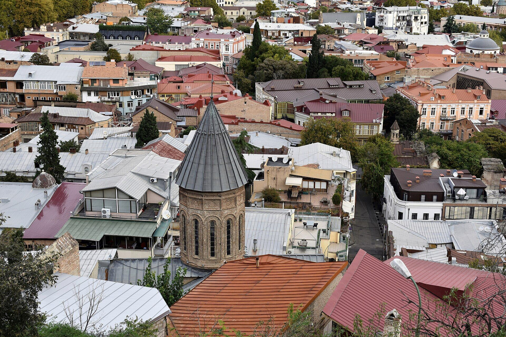
ქვემო ბეთლემი
აღმართის შუაში
1868 წლის გუმბათიანი ეკლესია სომხური სურფ-სტეფანოზის მონასტრის ადგილას. საფეხურების ნახევარი უკვე უკანაა, შეგიძლიათ სული მოითქვათ.
-
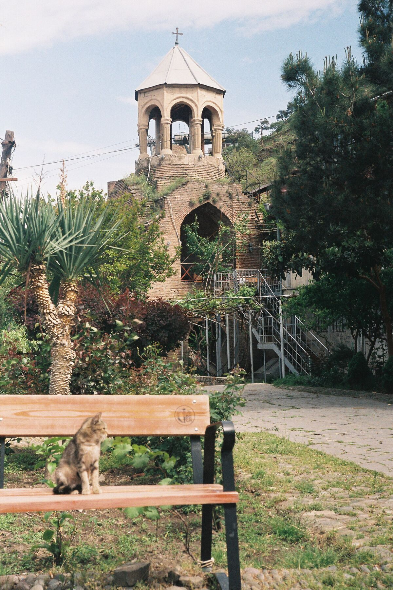
ზემო ბეთლემი
მეასოცე საფეხური
ბაღი ვარდებით, სკამებითა და ძველი ვაზის ფანჩატურით. ფეხქვეშ მთელი ძველი ქალაქი გიდევთ, შოთი კი ჯერ არ გაციებულა.
-
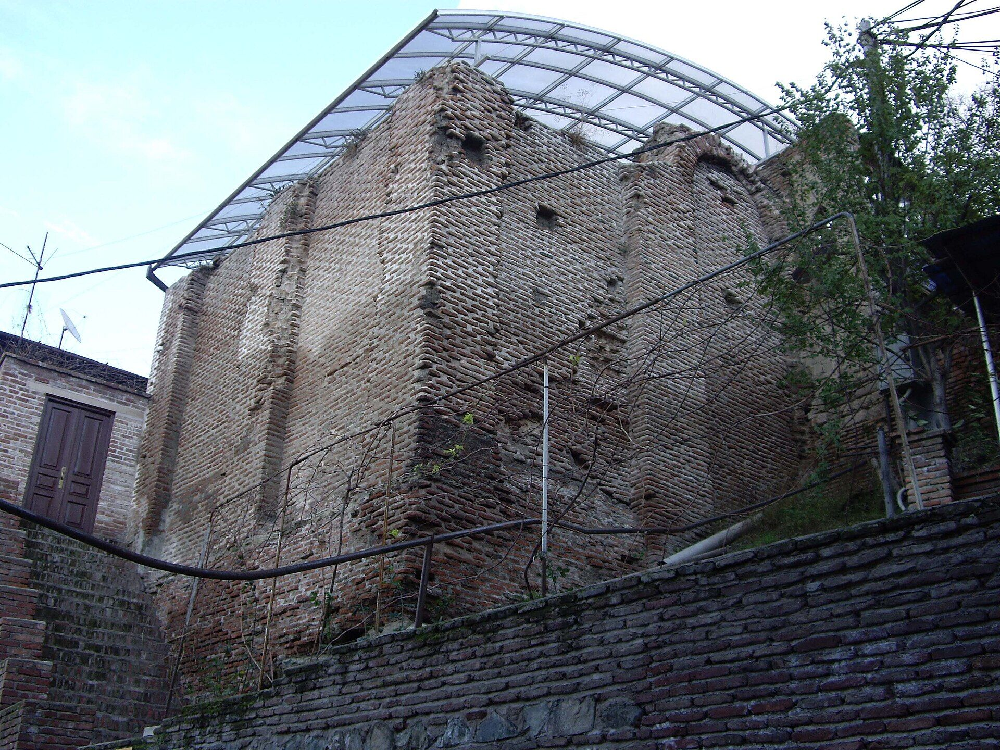
ათეშგა
ასი მეტრი აღმოსავლეთით
სასანიანთა ხანის ცეცხლის ტაძარი, მას ზოროასტრიელთა ყველაზე ჩრდილოურ ტაძარს უწოდებენ. ამ უბანში ცეცხლი ჩვენს თონემდე დიდი ხნით ადრე ენთო.
-
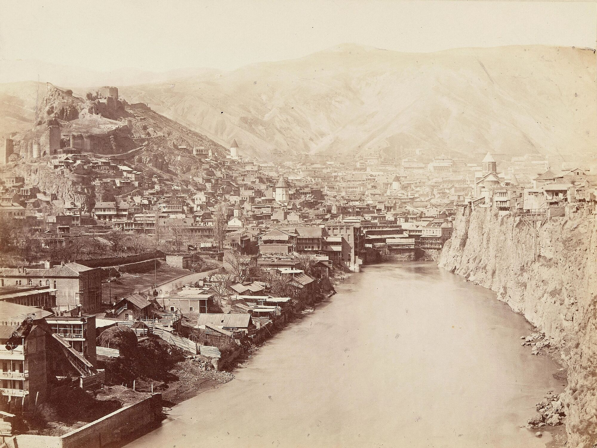
ნარიყალა
უბნის თავზე
ციხე ძველი ქალაქის თავზე, ზემოთ საბაგირო აგიყვანთ. უკან ფეხით დაბრუნდით: ბილიკი ზემო ბეთლემთან ჩამოდის, იქიდან კი ჩვენამდე 120 საფეხურია.
ტფილისი, 1860–1880-იანი წლები. ნარიყალას ციხე ქალაქის თავზე.
როგორ მოხვიდეთ თონემდე
საიდან მოდიხართ?
შოთს კედლიდან ყოველ რვა წუთში ვხსნით, 8:00-დან 20:00-მდე. ჩვენამდე ფეხით: ნარიყალადან 12 წუთი, ზემო ბეთლემიდან 3, ათეშგადან 4, თავისუფლების მოედნიდან 9, მშვიდობის ხიდიდან 10, აბანოთუბნიდან 12.
აღმართი 2
+995 XX XXX XX XX
ძველი თბილისი, კალა
ყოველდღე 8:00–20:00
puri@betlemi.example